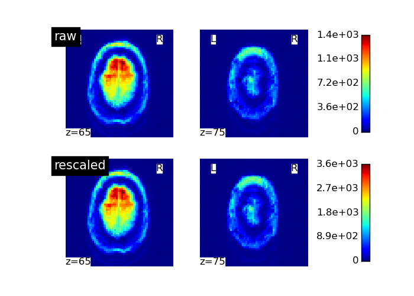

This example compares a volume before and after T1 correction.
# Create a memory context
from nipype.caching import Memory
mem = Memory('/tmp')
# Give the path to the 4D ASL image
raw_asl_file = '/tmp/func.nii'
# Rescale
from procasl import preprocessing
rescale = mem.cache(preprocessing.Rescale)
out_rescale = rescale(
in_file=raw_asl_file, ss_tr=35.4, t_i_1=800., t_i_2=1800.)
# Plot the first volume before and after rescaling
from nilearn import plotting
import matplotlib.pylab as plt
figure, (axes1, axes2) = plt.subplots(2, 1, figsize=(7, 5))
for filename, title, axes in zip(
[raw_asl_file, out_rescale.outputs.rescaled_file],
['raw', 'rescaled'], [axes1, axes2]):
volume_file = preprocessing.save_first_scan(filename)
plotting.plot_img(volume_file, axes=axes, display_mode='z',
cut_coords=(65, 75), title=title, colorbar=True)
plt.show()
Total running time of the script: (0 minutes 0.766 seconds)
Download Python source code: plot_heroes_rescaling.py